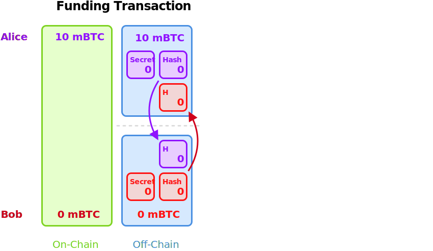
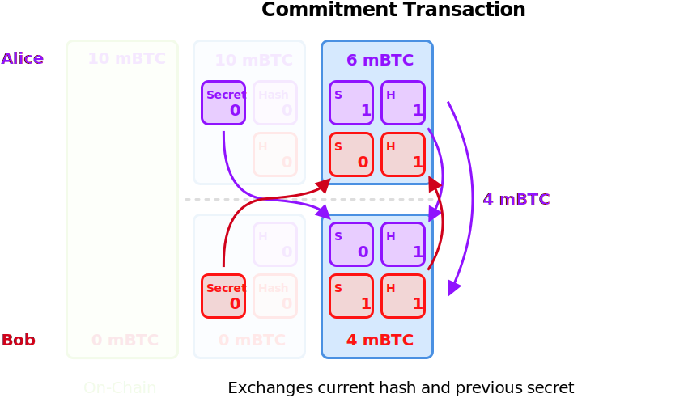
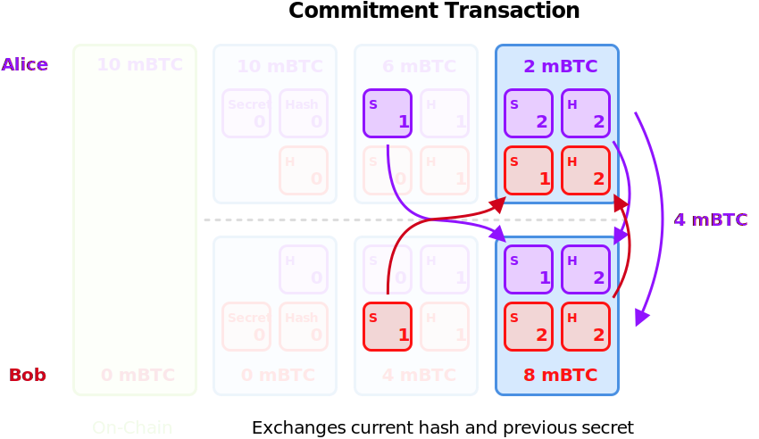
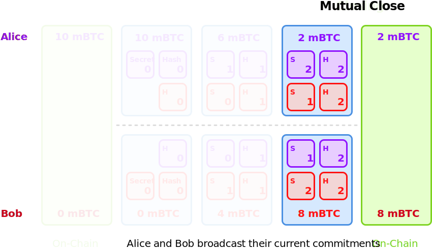
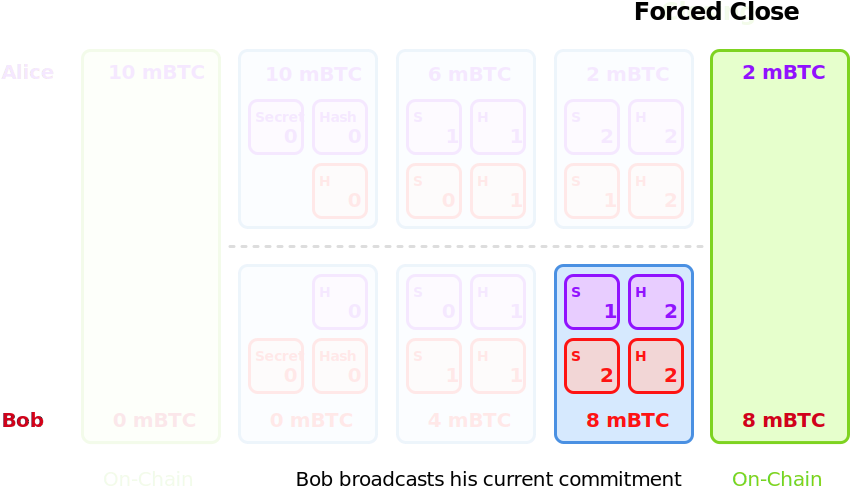
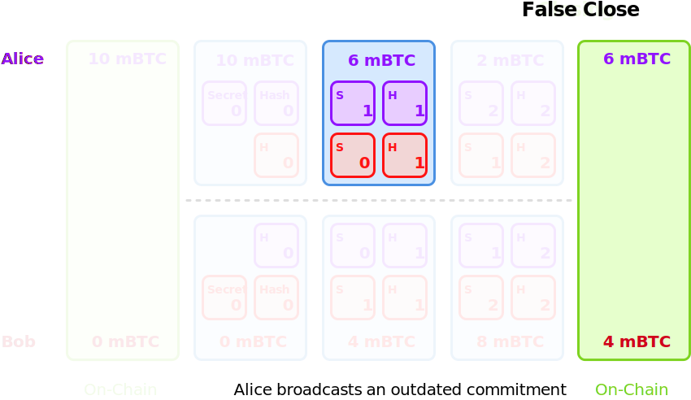
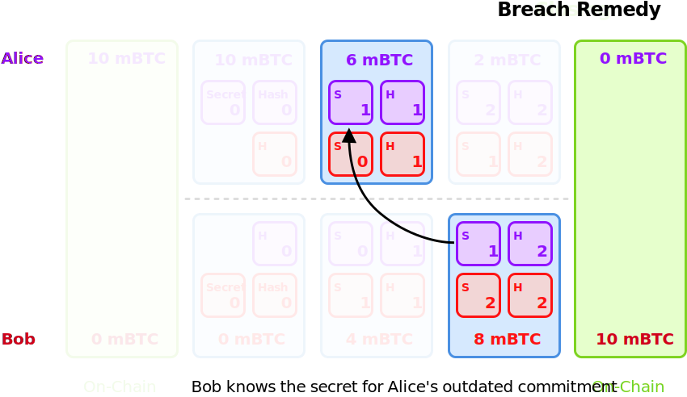
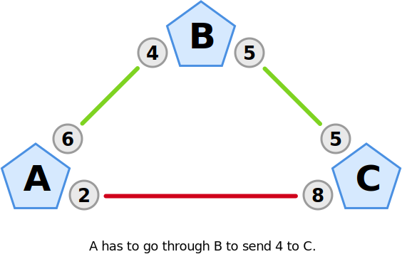
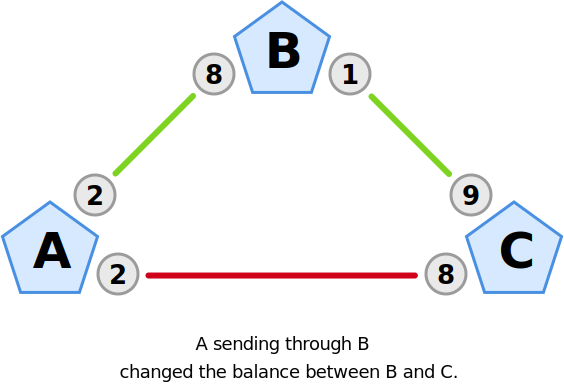
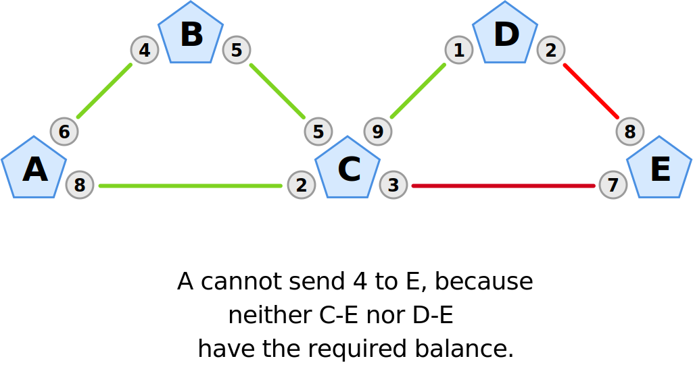

Lightning
⚡️
Network
Hochschule Bremen
–
May 23, 2019
Dennis Reimann
–
@dennisreimann
In a nutshell
- 🤓 Second Layer Scaling Solution (for Bitcoin)
- 🙂 Faster transactions, lower fees
- 🤔 Network of Bidirectional Payment Channels
Why scale?
- 📈 Growing adoption and transaction rate
- 😱 Full blocks leading to high fees
- 💰 Block space will be costly
- ⏱ Increasing transaction throughput
May 2019
- 🖥
8,500 nodes
- 3,400 public nodes
- 4,300 with active channels
- 🧮 36,500 channels overall
- 💰 1,000 BTC network capacity
Protocol Standard
- 📃 Specification: BOLTs (Basis of Lightning Technology)
- 🛠
Multiple implementations:
Channels
🖼 Big Picture
- Metaphor for state that is outside the blockchain
- Assumption: Not every transaction needs the blockchain
- Two parties open a channel by commiting on-chain funds
- "Branch off the blockchain into the Lightning Network"
- Pay each other by updating a balance sheet
- Instant: No waiting for block confirmations
- No fees: No mining, just updating the balance
- Done: Final balance is broadcasted to the blockchain







🕵️♂️ Preventing fraud
- Attempt: Close with an outdated version of the balance
-
Security model different from on-chain:
- Need to be online / Hot Wallet
- Trust-minimization
-
1000 block confirmation period / ~7 days
(ensured by CSV timelock)
-
Note: Revocation does not happen automatically!
(observe for unilateraly closed channels, watchtowers)
- Punishment: Fraud detection results in seizure of funds
🔗 On-Chain Relation
- Locking up Bitcoin UTXOs into a multisignature output
- Incremental mutation of a future on chain transaction
-
Differences to On-Chain transactions:
- Peers need to be online to transact / Hot Wallet
- Invoice/payment request is needed, no addresses
-
Rely on the blockchain for final settlement of funds
- Closing fee has to be reserved → changes balance
-
Prerequisites:
SegWit
(fixes malleability),
CSV opcode
🧮 Capacity and Liquidity
- Channel capacity is fixed
- Outbound and Inbound Liquidity
-
Funds are locked up in one direction:
-
To make a payment, you need outbound liquidity
→ funds on your side of the channel
-
To receive payments, you need inbound liquidity
→ funds on the remote side of the channel
- This is a big adoption topic currently.
- Channels can be rebalanced
🗺 Routing
- Finding a payment path for nodes that have no direct channel connection (multi hop payments)
-
Involves fees: Node operators set Base Rate and Fee Rate
→ cover the cost of locking up money in a channel
-
Constrained by capacity and liquidity along the path
→ The longer the path, the more limited you will be
- Technically: Hash Time-Locked Contracts (HTLC)



In Practice
📱 Wallets, Nodes, Apps
👻 Custodial vs.
🦸♂️ Non-Custodial
-
Custodial: Someone else manages your keys and funds.
- Easy access, fast onboarding
- Beware: Not your keys not your coins!
-
Non-custodial: You are holding the keys and funds.
- Currently requires tech-familiarity
- The UX and products are improving rapidly!
🍳 What's Cookin'?
- AMP: Atomic Multi-Path Payments
- Dual Funded Channels
- Autopilot: Automated channel creation
- Watchtowers: Delegating channel breach detection
- Unilateral/Push payments
- Cross-chain Atomic Swaps
⚡️ Lightning improves …
- 😎 Privacy: Transactions are not public
- 🤝 Fungibility: Difficult to apply surveillance or blacklists
- 🏎 Speed: Transactions settle instantly
- 🧩 Granularity: Enables very small payments
- ☄️ Capacity: No upper limit to number of payments
⚡️ Thanks! ⚡️
dennisreimann.de/talks/lightning-network.html
@dennisreimann